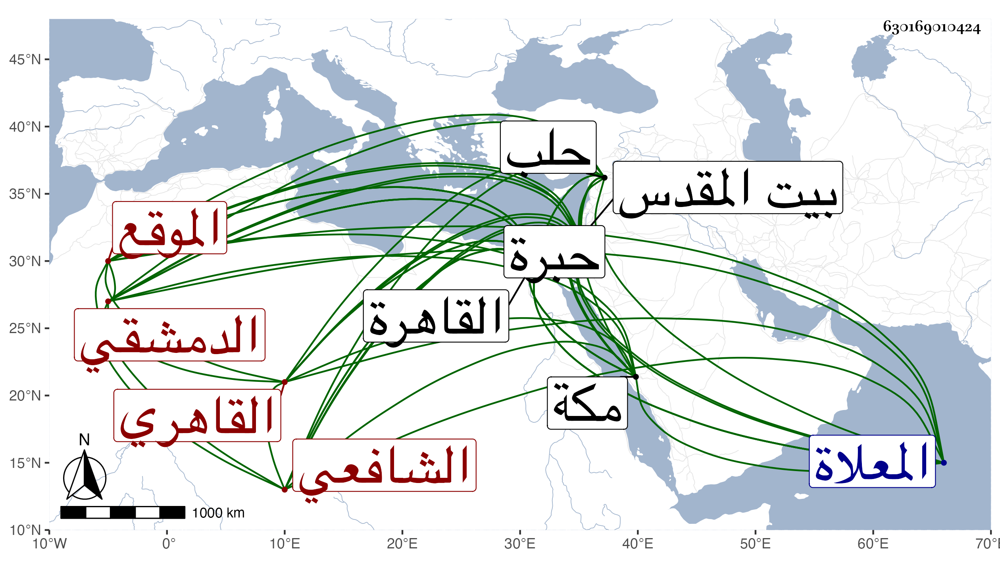

0902Sakhawi.DawLamic.ITO20230111-ara1.EIS1600.630169010424
Biography ID: 630169010424
إبراهيم بن أحمد بن عثمان بن علي بن عثمان بن علي بن عثمان بن سعد بن أبي المعالي البرهان أبو إسحق وأبو الوفاء بن الشهاب أبي العباس بن الفخر الدمشقي الأصل القاهري الشافعي الموقع ويعرف بالرقي نسبة للرقة من أعمال حلب وقديما بابن عثمان كان والده ما ورديا ذا حشمة وشكالة حسنة يعرف بصهر ابن قمر الدولة وبوكيل الطنبذي فولد هذا في رجب سنة اثنتي عشرة وثمانمائة بالقاهرة ونشأ بها فحفظ القرآن والعمدة والتنبيه وألفية النحو عند صاحبنا الشمس بن قمر وعرض على الجلال البلقيني والولي العراقي والبيجوري وابن الجزري والقمني والبدر بن الأمانة والمحب بن نصر الله الحنبلي وشيخنا وصالح الزواوي والتلواني والعز عبد السلام البغدادي وأجازوه في آخرين كالشمس الشطنوفي والبرهان بن حجاج الأبناسي والشرف السبكي وعرض أيضا على خلق من الأعيان ممن لم يصرح في خطه بالإجازة كالشموس البرماوي والهروى وابن الديري والبساطي والشامي الحنبلي وبلغني أنه سمع على الشرف بن الكويك ولا أستبعده واشتغل يسيرا فقرأ النحو على الشرف الطنوبي والمعاني والبيان على الشمس السرواني وكذا قرأ على التقى الحصني نزيل القاهرة فيما بلغني وجود الخط على الزين بن الصائغ وبرع فيه بحيث أجازه بالأقلام كلها وتنزل في صوفية البيبرسية وتدرب في التوقيع بناصر الدين الناقوي وبشارته استقر أحد موقعي الدرج في الأيام البدرية ابن مزهر ثم ترقى لتوقيع الدست في الأيام الكمالية برغبة يونس الحموي له عن ذلك واستقر أيضا في الشهادة وبالاسطل وحج مرارا وجاور غير مرة ونسخ هناك عدة مصاحف وزار القدس والخليل وسمع هناك على التقى أبي بكر القلقشندي والجمال بن جماعة بل قرأ بنفسه على بعض الفضلاء من أصحابنا بالقاهرة ورام مني ذلك فما تيسر لكنه كان يسأل عن أشياء خطه عندي ببعضها واستجيز في بعض الاستدعاءات وكان تام العقل حسن العشرة كثير السكون سيما بعد ثقل سمعه ماهرا بالشطرنج فيه رياسة وحشمة مع وضاءة وتواضع ولأوصافه التي انفرد بها عن رفقته صار أوحد أهل الديوان وقد أثكل عدة أولاد آخرها في سنة ثلاث وسبعين وحزن عليه كثيرا وسافر لذلك إلى مكة في البحر فأقام على طريقة حميدة من الطواف والصلاة وكثرة التلاوة إلي أن أدركه أجله وهو محرم عشية عرفة سنة أربع وثمانين ونقل إلى المعلاة فدفن بها يوم العيد وذلك يوم الأحد وغبطه العقلاء على هذا ونعم الرجل كان رحمه الله وإيانا .
